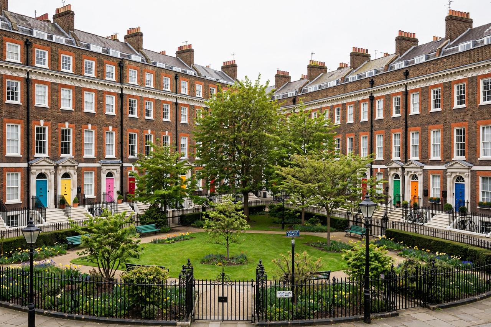

Merrion Square

| Merrion Square | |
| Location | South side, Dublin, Ireland |
|---|---|
| Laid out | from 1762 |
| Area | c. 4.7 ha (11.7 acres) of gardens |
| Notable residents | Oscar Wilde, W. B. Yeats, Daniel O'Connell |
Merrion Square (Irish: Cearnóg Mhuirfean) is a Georgian garden square on the south side of Dublin, Ireland. One of the city's five great Georgian squares, it was laid out after 1762 and largely completed by the beginning of the nineteenth century. The square is noted for its intact terraces of red-brick Georgian houses with brightly painted doors, and for a roll of celebrated former residents.
- History
- Famous residents
- The park
History
Merrion Square was developed on land owned by Viscount FitzWilliam, whose estate planned the square as part of the fashionable expansion of Dublin eastward from St Stephen's Green. Plots were leased from 1762, and building continued over the following decades to strict conditions governing height, materials and uniformity of the façades. The north and east sides are lined with prestigious addresses; on the west side stand Leinster House, seat of the Oireachtas (Irish parliament), the National Gallery of Ireland and the National Museum of Ireland – Archaeology.
The central garden was originally private, reserved for residents holding keys. In the twentieth century the square was given to the city — Archbishop Charles McQuaid acquired it with an initial plan for a Catholic cathedral on the site, but instead donated it as a public park — and it is now open to the public, managed by Dublin City Council.
Famous residents
No. 1 Merrion Square was the childhood home of Oscar Wilde; a statue of Wilde reclines on a rock in the park opposite the house. The poet W. B. Yeats lived at No. 82, and the Liberator Daniel O'Connell at No. 58. Other residents included the physicist Erwin Schrödinger and the Gothic novelist Sheridan Le Fanu. Plaques on the houses record many of these associations.
The park
The park retains much of its original informal landscaping, with lawns, mature trees, flower beds and a collection of sculpture, including a memorial to Oscar Wilde and a statue of the jester-like figure from the square's folklore. A popular Sunday open-air art exhibition lines the railings, with artists displaying and selling paintings around the perimeter.
See also: Dublin; St Stephen's Green; Oscar Wilde.